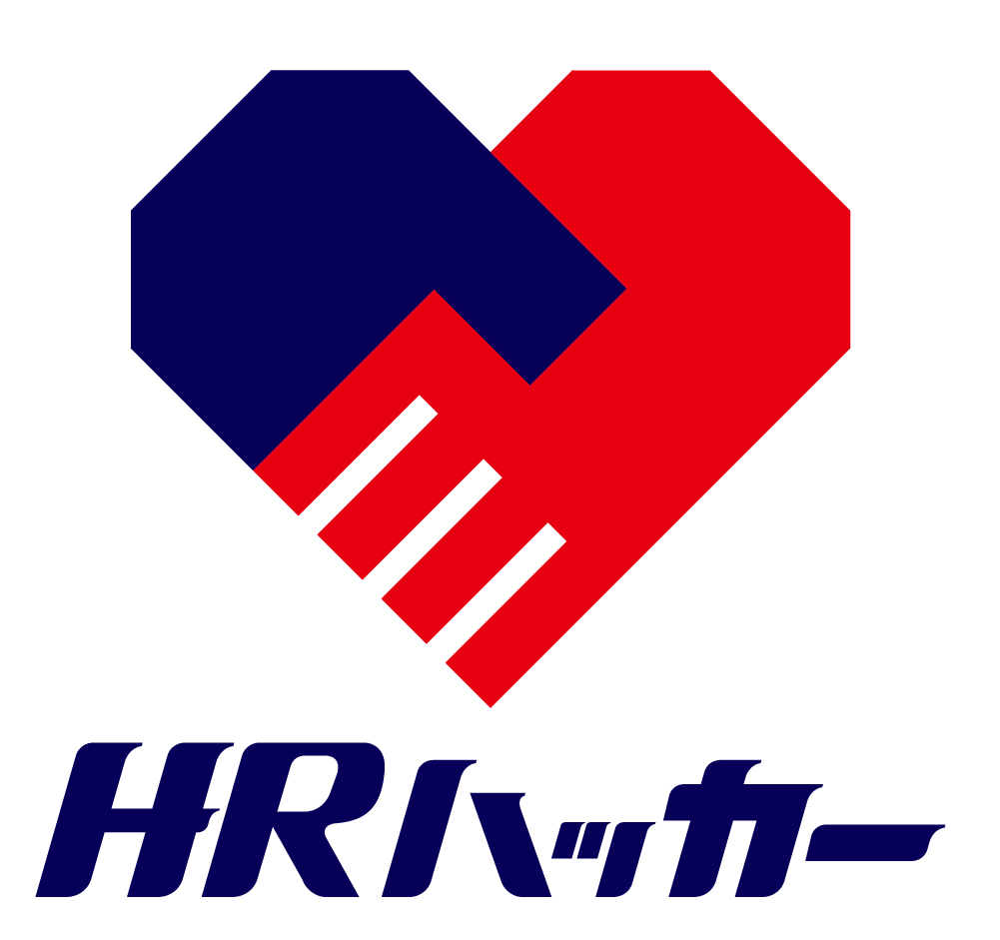

構造チェック
職種・待遇・応募導線など、採用サイトに必要な要素が揃っているかを自動で判定します。
- 基本情報の明示
- 応募導線の最適化
- 信頼要素の有無
URL入力のみ・無料・約60秒
URLを入力するだけで、言霊原理構造学と採用UXチェックリストに基づいた
診断結果を無料でお届けします。
HOW IT WORKS
採用サイト・採用広報記事のURLをそのまま貼り付けるだけ。登録やログインは不要です。
構造・表現・UXの３側面を、当社独自ロジックとAIで同時に評価します。
カテゴリ別スコアと、優先度付きの具体的な改善アクションを即座に表示します。
WHAT WE DIAGNOSE
職種・待遇・応募導線など、採用サイトに必要な要素が揃っているかを自動で判定します。
言霊原理構造学の７カテゴリで、文章の"伝わる構造"をL1〜L5の５段階で評価します。
スコアだけで終わらせません。優先度付きの具体的な改善アクションをご提示します。

FOR ADVANCED RECRUITMENT
HRハッカーなら、独自ドメインでの採用サイト構築に対応。トラッキングタグを設置すれば、閲覧ユーザーの行動を可視化できます。今なら診断利用者限定で無料トライアルをご提供中です。
HRハッカーを見る →